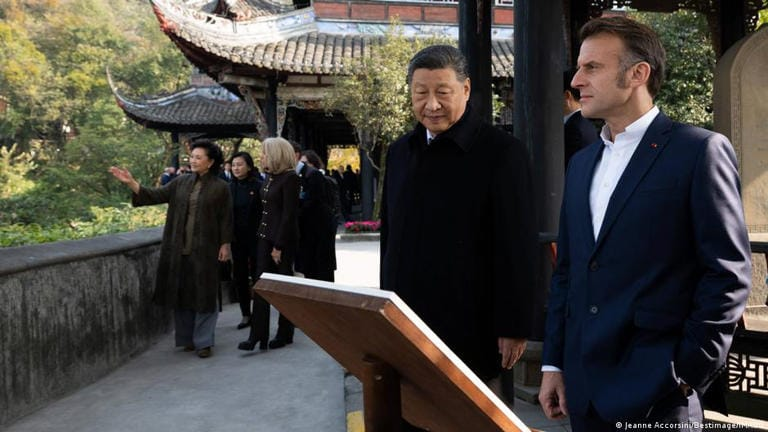

世界苦茶12月05日新闻 | 40条 | 中日航线退改政策延长

中日航线退改政策延长 | 习近平罕见陪同马克龙前往成都 | Netflix完成收购华纳兄弟影业 | 印度航空出行陷入混乱 | 普京在新德里加强与印度关系 | 德国联邦议院投票完成兵役改革 | 美国最高院允许共和党在德州使用更改后的地图
苦茶数据
美元兑人民币：7.06（昨日7.06，前日7.06）
美元兑日元：155.37（昨日154.89，前日154.95）
上证指数：休市（昨日3902，前日3875)
标普500指数：休市（昨日6870，前日6857）
比特币：89344（昨日92105，前日93438）
布伦特原油：63.75（昨日63.24，前日63.34）
中国新闻
• 中国三大航司延长中日航线免费退改政策。
中日争端继续发酵，中国国际航空公司、东方航空公司以及南方航空公司公告，中日航线免费退改签延长至明年3月28日。据第一财经报道，这三家航空公司陆续发布日本相关航线客票特殊处理的通知，2026年3月28日前出行的涉及日本进港、出港或经停航班可免费退改。在此宣布之前，免费退改签政策是到2025年12月31日结束。
• 习近平罕见离京陪外国元首游览名胜 但马克龙此行收获寥寥。
中国国家主席习近平星期五和法国总统马克龙在成都举行非正式会晤，并陪同马克龙参观都江堰。这一罕见的高规格安排，凸显出北京在处理中欧关系时对这个欧盟第二大国的重视。有分析认为，马克龙虽得到北京的格外礼遇，友好交往的象征意义大于法国的实际收获。星期五是马克龙此次访华行程的最后一天。他在成都的行程，从清晨在锦城湖公园晨跑开始，吸引了不少人围观。当地跑步者在社交媒体贴出“偶遇马克龙”的帖文，登上微博热搜。马克龙稍后与习近平一同参观都江堰水利工程。
• 马克龙敦促习近平帮助结束乌克兰战争。
马克龙敦促习近平帮助结束乌克兰战争 周四，法国总统马克龙在北京访问期间，再次敦促中国国家领导人习近平采取更多行动，帮助结束俄罗斯在乌克兰的战争。自这场战争爆发以来，西方多国领导人就此事多次游说，而习近平再次未表现出任何配合的意愿。马克龙在为期三天的访华行程中提出了这一呼吁，这也是其任内第四次到访中国。习近平主席以红毯与仪仗队接待了他。两位领导人在会谈时都急切希望在地缘政治目标上争取对方的支持。当前乌克兰战争已持续近四年，特朗普总统正试图牵头推动和平谈判，欧洲各国领导人纷纷行动，力求确保任何解决方案都不会损害乌克兰的主权。长期以来，欧洲始终认为，中国与俄罗斯关系密切，可以向俄方施加更大压力。
• 中国C909型国产客机 占中国国内支线客机逾60%以上。
中国商用飞机公司的C909型国产客机目前已交付174架，占中国国内支线客机60%以上。据《人民日报》报道，中国工程院院士、中国商飞工程总师陈勇星期五在中国工程院举行的2025年当选院士学习教育暨颁证仪式上披露上述数据，并称C909已在海外12个国家运行，安全载客超3000万人次。他指出，喷气客机是高端复杂产品，由数百万零部件构成，安全要求极高，全球仅少数国家和地区具备研制能力。陈勇说，经过23年的艰辛探索，C909突破了喷气客机设计、制造、运维以及满足国际最新适航标准的安全技术、极端环境高适应性高可靠性的运营技术，进入规模化系列化高质量发展新阶段。（翻评：C909，即原ARJ21客机，是中国当年与麦道合作生产MD-80的产物。）
• 特朗普的国家安全蓝图旨在遏制中国在拉丁美洲的崛起。
特朗普的新国家安全蓝图旨在遏制中国在拉美的崛起 该框架承诺阻止竞争对手威胁该地区邻国的稳定与政治取向 在美国的战略话语中，“西半球”大体指代美洲，这是一个长期被视为华盛顿影响范围的地缘政治空间。这一观念可以追溯到门罗主义——19世纪的一项政策，警告欧洲列强不要干涉新近独立的美洲国家。该战略宣称，美国将“拒绝非西半球竞争者在我半球部署军力或其他威胁性能力，或拥有或控制具有战略重要性的资产”的能力，提出官员所谓的“特朗普附录”，以恢复美国在该地区的主导地位。白宫将西半球描述为美国“国土安全区”的一部分，把邻国的稳定与政治取向视为国家防务问题，而非外交偏好。
• 中国人民解放军海军舰队在菲律宾海向南航行，澳大利亚高度戒备。
075型两栖攻击舰在今年中国海军对澳大利亚进行前所未有的环绕航行后，再次引发堪培拉的担忧。堪培拉已派遣一架P-8海上巡逻机跟踪该编队，以回应九个月前那次对澳大陆环绕航行带来的安全隐忧。美国卫星图像周三被澳大利亚媒体首次报道，证实了中国舰艇及一架附近直升机的存在。影像似乎还显示，舰艇“海南”脱离队形航行离去，而一艘驱逐舰与一艘补给舰正在进行补给作业。“海南”是中国首艘4万吨级两栖登陆直升机母舰，2021年入列。第四艘075型舰“湖北”于8月服役，近期在其他海域完成了演训。
• 品茶、午餐、都江堰：习近平“罕见”亲自陪同马克龙访成都。
2025年12月5日法国总统马克龙访华的最后一站是成都。路透社报道指出，习近平陪同马克龙访问成都的举动“非常罕见”，凸显了北京在与欧盟关系中对法国的重视。相比此前在北京的会谈，成都行程的氛围显得相当轻松愉快。中国社媒上的图片显示，马克龙周五在四川省会成都晨跑，似乎还与路人打招呼，中国网友用“松弛感拉满”来形容这位法国总统。相比此前一天在北京人民大会堂针对俄罗斯侵乌战争等问题进行会谈的严肃气氛，周五在四川的氛围明显轻松很多。中国国家主席习近平和夫人彭丽媛陪同马克龙及其夫人布丽吉特参观了拥有悠久历史的都江堰。
印太新闻
• 台大政大掀校园兵推热 战略显学在台湾年轻世代发酵。
11月底的周五傍晚，台湾大学社会科学院学生开放空间里，几张桌子并排，上头铺着台湾本岛、台海地图及密密麻麻的兵棋。动次时间一到，学生紧凑讨论，下一秒就得决定是否升高戒备、寻求国际协调或调整战备部署。这场看似桌游聚会的活动，其实是台大国家安全暨战略研究社与KTT科普兵推合作，以台海危机为想定的学生兵棋推演。虽较正式军事兵推简化许多，但紧凑节奏仍让20余名学生在四个多小时里连上厕所都舍不得。近年随着台海情势升温，原属军方作战研究领域的兵棋推演逐渐走进校园。从淡江、国防大学到台大国安社、政治大学新成立的国家安全战略与政军兵棋推演研究社，愈来愈多学生把兵推当成最投入的课外活动。
• 随着IndiGo取消数百班航班，印度出行混乱加剧。
印度最大航空公司IndiGo在本周经历三天大范围航班扰动后，于周五取消了数百班原定航班，使印度的出行混乱进一步加剧。该公司在印度市场占有约60%的份额，日均执飞航班超过2000班。由于未能及时适应新的机组排班规则，IndiGo面临飞行员短缺问题。正值旅行高峰期，数千名乘客在印度各地滞留，首都新德里出发的所有IndiGo航班均被取消。IndiGo表示，运营要到2月10日才能完全恢复正常，并已寻求对要求增加休息时间与限制夜班的新规给予临时放宽。该航空公司还表示将自12月8日起减少航班以尽量减少扰动。政府方面表示正密切关注事态发展。
• 日韩就1月在奈良举行首脑会谈展开协调。
日韩两国政府已就2026年1月中旬邀请南韩总统李在明访问日本启动协调工作。正考虑在日本首相高市早苗的家乡奈良县举行会谈。李在明曾于2025年8月访问日本，高市也刚刚在10月出席国际会议期间访问南韩。两国正通过高频次的会谈来维系良好的双边关系。高市在10月于南韩举行的亚太经合组织领导人会议期间和李在明会谈时向对方表示：「我想下次会在日本接待您」。李在明也对访问日本的地方城市显示出积极意愿。李在明就中日关系恶化问题表示将采取「中立」立场。
科技新闻
• 埃隆·马斯克的X因违反内容规则遭欧盟处以1.4亿美元罚款。
埃隆·马斯克的社交媒体公司X周五被欧盟科技监管机构处以1.2亿欧元罚款，因违反欧盟在线内容规定，这是该项具有里程碑意义立法下的首例制裁，可能招致美国政府不满。欧盟监管机构表示，X违反数字服务法的行为包括将蓝色认证徽章设计为具有欺骗性，广告存档透明度不足，以及未能向研究人员提供公共数据访问权限。竞争对手抖音通过作出让步避免了罚款。欧盟对科技巨头的打击旨在确保小型竞争对手能够竞争并为消费者提供更多选择，此举遭到特朗普政府批评，称其针对美国公司并审查美国人。欧盟执行机构欧盟委员会表示，其法律不针对任何国籍，仅是在捍卫其数字和民主标准。
• OpenAI最快将于下周二发布GPT-5.2。
据知情人士透露，OpenAI计划通过即将推出的GPT-5.2，对谷歌的Gemini 3系列模型首度展开回应。目前该模型已经准备就绪。知情人士表示，GPT-5.2应该能弥补谷歌上个月发布Gemini 3所拉开的差距。OpenAI原本准备计划在12月底发布GPT-5.2，但谷歌带来的压力迫使他们将发布时间提前。目前OpenAI将12月9日定为GPT-5.2的发布时间。按照过往经验，OpenAI的新品发布通常较为随意，可能会因为算力不够、对手发布新品，或者媒体的爆料而调整。如果计划有变，大家看到GPT-5.2的时间可能会比12月9日略晚一些。
• 报告显示ChatGPT的用户增长已经放缓。
Sensor Tower新数据显示，ChatGPT的增长正开始逐渐放缓。目前，这款由OpenAI拥有的AI聊天机器人仍是该领域的领头羊，占全球移动设备下载量的50%和全球月活跃用户的55%。然而，就下载量、月活跃用户及应用内使用时长增长而言，Gemini已开始超越ChatGPT。截至11月，ChatGPT的全球月活跃用户同比增长180%，而Gemini的月活跃用户增长170%。但ChatGPT的全球月活跃用户从8月到11月仅增长约6%，达到约8.1亿。这可能意味着这款AI聊天机器人正接近市场饱和。同时，谷歌Gemini的全球月活跃用户在同一时期跃升约30%，因为其新图像生成模型Nano Banana的发布推动了使用率提升。
经济新闻
• 明年手机或将更贵，这要归因于 AI 热潮。
昂贵的摄像头、巨型屏幕和大容量存储通常会推高智能手机价格。但明年，可能推动价格上涨的却是一个常规部件：内存。而且不仅是手机，任何使用内存的设备——从手机到平板与智能手表——都有可能变得更贵。内存价格上涨的原因是主要厂商转而加大对人工智能数据中心的产能投入，以应对人工智能公司的蓬勃发展。“总体上情况相当严峻且紧张，”Counterpoint Research的高级分析师杨望表示。全球市场研究公司国际数据公司本周早些时候报告称，2026年智能手机市场预计将下滑0.9%，部分原因就是内存短缺。Counterpoint Research上月表示，内存价格预计在2025年第四季度飙升约30%，并可能在明。
• 从钢铁到太空：中国巨头在大胆转型中出售首两颗卫星。
曾为摩天大楼炼钢的济钢集团，如今正与吉利及其他9万多家中国企业一同竞逐天空。济钢集团花了数十年为中国的基建热潮打造钢材。如今，这家曾经的工业巨头正在为最后的边疆制造硬件。这家国有企业曾是全国主要钢铁生产者之一，如今已拿下首批两颗卫星订单——这是其多年转型以抢占国内蓬勃发展的商业航天市场需求的关键一步。《经济观察报》本周报道了该采购消息，称公司位于山东省会济南的新卫星组装基地预计本月开始投产。报道未披露买家姓名，且不清楚是否涉及多个买家。
• 梅洛尼的“意大利兄弟党”与意大利银行就黄金储备发生冲突。
乔治娅·梅洛尼的意大利兄弟党正在就黄金储备与该国有影响力的中央银行发生冲突，加剧了政府与意大利技术精英之间的对立。上个月，意大利兄弟党在参议院的首席党鞭、梅洛尼的亲密盟友卢乔·马兰向2026年预算案提出修正案，主张意大利国家对由意大利银行持有、价值近2900亿欧元的黄金储备拥有所有权。乍看之下，这一修正案的由来似乎并不难理解。意大利账面债务惊人，约占国内生产总值的140%，并受到欧盟严格要求控制赤字，导致长期的预算紧缩。
• 稀土价格高涨趋于常态。
稀土类价格的上涨依旧没有缓和的迹象。经过10月的中美首脑会谈后，中国决定推迟原计划启动的出口管制的强化措施。不过，对于美国总统川普声称「所有问题都已解决」的说法，市场相关人士持怀疑态度。对于当前中日对立的动向，慎重的态度也在逐渐加强。稀土是指稀有金属中的17种特定元素。例如，镝和铽在提高用于纯电动汽车等的电机磁铁的耐热性方面不可或缺。稀土价格上涨正趋于常态。英国调查公司阿格斯媒体的统计显示，从受中国出口管制影响的欧洲价格来看，截至11月27日，铯为每公斤910美元。这一水准是出口管制前的3倍以上。铽为每公斤3700美元。
• 日企在海外生产的汽车返销日本数量将创新高。
在日本市场，从海外进口的日本汽车的销量在2025年将达到30年来的最高水准。本田和铃木正在大幅增加从印度的进口。印度的人工费较低，即使在日元贬值局面下，成本竞争力也比日本国内生产有优势。日本车企以日本为主要生产基地、向世界出口的业务模式开始发生变化。在日本，从海外进口的日本车被称为「逆进口」。日本汽车进口商协会12月4日公布的数据显示，2025年1～11月的返销车销量同比增长19%，达到10万2332辆。超过按年度计算历史最高的1995年的10万7092辆是大概率事件。
• 随着竞争对手步步逼近，中国造船厂将重心转向建造更先进的船舶。
中国造船商在前三季度占全球订单的65%，较一年前的近75%有所下降。克拉克森报告称，地缘政治紧张导致今年中国制造船舶订单暴跌，截至九月的三个月内为1050万吨，较一年前的2690万吨下降61%。“世界经济和造船业已进入一个增长放缓、不确定性增加的新周期，”上海船舶与海洋工程学会会长邢文华说。
• Netflix 将以720亿美元收购华纳兄弟影业及流媒体业务。
奈飞同意以720亿美元收购华纳兄弟的电影和流媒体业务 奈飞已同意以720亿美元收购华纳兄弟探索的电影和流媒体业务，此项好莱坞重大交易经过漫长角逐后，奈飞在与康卡斯特、派拉蒙和Skydance等竞争者的较量中脱颖而出。华纳兄弟拥有《哈利·波特》《权力的游戏》等系列版权及流媒体服务HBO Max。此项收购将打造娱乐业新的巨头，但交易仍须获得监管机构批准。影视圈内包括美国编剧工会在内的部分人士批评该交易，称其将对从业者和消费者产生负面影响。奈飞共同首席执行官特德·萨兰多斯表示，公司“高度自信”能够获得所需监管批准，并正“全速”推进。他称，将华纳兄弟的影视库与奈飞自制剧如《怪奇物语》相结合。
俄乌战争
• 普京与莫迪在新德里会谈中扩大印俄经贸关系。
普京与莫迪在新德里会谈，扩大印俄经贸关系 孟买——周四傍晚，印度总理纳伦德拉·莫迪亲自前往新德里接待抵达首都的俄罗斯总统弗拉基米尔·普京，两人在车内拥抱并自拍。恒河晚祷时点燃的虔诚油灯摆出“欢迎普京”的字样，并在网上流传。检礼队和铜管乐队也到场欢迎。印度热情接待普京，这是自俄国入侵乌克兰近四年以来他首次访印。此访部分意味着印度对特朗普政府时期那种惩罚与当众羞辱新德里因购买俄油而产生的压力表示不屈。“最重要的信息是，印度有选择的余地，”查塔姆研究所南亚问题高级研究员奇耶蒂格·拜贾伊说。
• 匈牙利否决以欧元债券替代欧盟对俄罗斯资产计划的方案。
匈牙利周五正式排除了发行欧元债券以支援乌克兰的可能，此举剥夺了欧盟在无法找到利用被冻结的俄罗斯国家资产为基辅提供1650亿欧元贷款的替代方案时的一个备选方案。欧盟委员会希望27个成员国在本月晚些时候的峰会上同意，基于被冻结的俄罗斯中央银行储备向基辅摇摇欲坠的经济提供一笔贷款。比利时强烈反对，因为其持有这笔被冻结资金的大头，担心如果克里姆林宫提起诉讼将承担责任。欧元债券本可为乌克兰提供另一条融资渠道，但布达佩斯拒绝了发行由欧盟七年预算担保的共同债务的想法，两名在大使会议上的外交官对POLITICO表示。
• 美国财政部延长豁免，允许俄罗斯卢克石油在俄罗斯境外的加油站继续营业。
美国财政部延长豁免，允许卢克石油在俄国外的加油站继续经营，尽管存在制裁 特朗普政府于12月4日延长了一项豁免，允许海外的卢克石油品牌加油站继续营业，从而在一定程度上软化了10月对该公司的制裁。财政部的一则公告称，该豁免允许大约2000家加油站在欧洲、中亚、中东和美洲继续运营，期限至2026年4月底。华盛顿于10月22日对卢克石油和俄石油同时实施的制裁，标志着特朗普第二任期内美国首次对主要俄罗斯能源公司采取直接惩罚，并引发了对卢克石油220亿美元海外资产潜在买家的浓厚兴趣。这些措施冻结了两家公司在美资产，并威胁对与其交易的外国实体实施次级制裁。
• 乌克兰对特朗普的女婿参与和平谈判持谨慎乐观态度。
随着特朗普女婿加入和谈，乌克兰持谨慎乐观态度——这就是原因 2020年1月29日，贾里德·库什纳在白宫聆听美国总统唐纳德·特朗普发言，摄于华盛顿特区。随着美国总统唐纳德·特朗普的女婿贾里德·库什纳在最新和平推动中扮演更活跃的角色，乌克兰官员表示对他的参与持谨慎乐观态度。库什纳于11月23日在日内瓦、11月30日在佛罗里达参加美乌谈判，随后于12月2日前往莫斯科会见俄罗斯总统弗拉基米尔·普京。“特朗普把库什纳加入本身就是一个好信号，”乌克兰议会外交事务委员会主席奥列克桑德·梅列什科说。他补充道，库什纳看起来并没有被“普京的魔力”所左右。库什纳在高风险外交中迅速崭露头角。
• 通话记录显示，欧盟领导人告诉泽连斯基，决定被冻结的俄罗斯资产的是他们。
通话记录显示欧盟领导人在与泽连斯基通话时表示，由他们而非美国决定冻结的俄罗斯资产问题 根据基辅独立报获得的一份记录，欧洲领导人在最近一次与乌克兰总统弗拉基米尔·泽连斯基的通话中私下坚持，应由他们单独控制对被冻结俄罗斯资产的处置决定。此时据报道美国曾游说欧洲国家阻止将这些资金借给乌克兰的计划。通话中，德国总理弗里德里希·默茨、法国总统埃马纽埃尔·马克龙和欧盟委员会主席乌尔苏拉·冯德莱恩反复强调，欧洲正推进所谓的“赔偿贷款”，并且关于这些资产的决定权完全属于欧洲。该记录由一名高级外交消息人士与基辅独立报分享。欧盟在12月3日正式提出赔偿贷款计划，拟将多达2100亿欧元的被冻结俄罗斯资产借给乌克兰。
• 法拉奇称，特朗普对“不讲道理”的普京感到“沮丧”。
英国政治家奈杰尔·法拉奇表示，与美国总统关系最密切的他认为，唐纳德·特朗普对弗拉基米尔·普京在旨在结束乌克兰战争的和平谈判中不理性的做法感到“沮丧”。法拉奇称，特朗普正尽最大努力为乌克兰争取公正的协议，并补充说，目前关于限制乌克兰军队规模及割让领土给俄罗斯的提议是不可接受的。“普京随着每周的推移都在证明他不理性，他不想要公正的解决方案，坦白说，他是一个极其危险的人，”法拉奇周四对记者说。
• 民调：多数美国人认为，美国方案等于判定莫斯科获胜。
民调：多数美国人认为让乌克兰割地或限制军队规模等于让俄罗斯获胜 一项新民调显示，大多数美国人认为，迫使乌克兰向俄罗斯割让领土或限制乌军规模，将等同于在俄对乌全面入侵中判定莫斯科获胜。More in Common 的调查结果独家提供给基辅独立报，显示国际社会对白宫提出的最新和平方案关键部分存在强烈反对。“在欧洲和美国，人们都希望看到这场不公正战争的结束，停止乌克兰人民的痛苦。然而，这次民调的明确结果是，他们认为与其达成对俄罗斯有利、使乌克兰处于脆弱地位的糟糕协议，不如不达成协议，”More in Common 英国执行董事卢克·特瑞尔对基辅独立报表示。
• 在被问及所谓“背叛”言论时，马克龙敦促美欧“团结”。
法国总统埃马纽埃尔·马克龙在被问及有报道称他在与欧洲领导人的私人通话中曾说华盛顿可能“背叛”基辅时，强调欧洲与美国在乌克兰问题上需保持“团结”。马克龙在与中国国家主席习近平一同访问成都时对记者说：“这几天我看到了所有的谣言。美欧在乌克兰问题上的团结至关重要。我们需要共同努力。我们必须共同努力。”马克龙此番回应的是关于《明镜周刊》获得的一份据称是周一他与其他欧洲领导人通话的泄露记录的提问。该德国杂志报道说，法国总统在通话中警告称，在美国斡旋的基辅与莫斯科和平谈判期间，乌克兰总统弗拉基米尔·泽连斯基面临“重大危险”。
世界新闻
• 德国投票通过为18岁青年设立自愿军事服役计划。
联邦议院已投票通过引入自愿兵役制，此举旨在俄罗斯对乌克兰的全面入侵后增强国家防卫能力。此举标志着德国对军队策略的重大转变，也呼应了总理弗里德里希·梅尔茨推动打造欧洲最强常规军队的主张。新规规定，从2026年1月起，德国所有18岁青年将收到一份问卷，询问他们是否有兴趣并愿意加入军队。该表格对男性为强制填写，对女性则为自愿。德国各地的学生表示，将在周五在多达90个城市发起罢课抗议此举。
• “我不想成为这台战争机器的一部分”：德国年轻人抗议征召入伍计划。
年轻人走上柏林街头，抗议德国议会决定在俄罗斯对乌克兰发动全面入侵后，引入志愿兵役以增强国防。该改动意味着从2026年1月起，德国所有18岁青年都将收到一份问卷，询问他们是否有兴趣并愿意参军。尽管该计划以志愿为主，但如果安全形势恶化或志愿者人数过少，可能会考虑某种形式的强制兵役。“我不想成为这台战争机器的一部分，”一名抗议者说。
• 美国最高法院同意审理挑战出生即公民权的案件。
美国最高法院同意受理挑战属地出生公民权的案件 美国最高法院已同意受理一宗案件，审理长期确立的宪法权利——在美出生者享有公民身份——是否继续有效。特朗普总统在一月上任首日签署命令，试图取消属地出生公民权，但该举措在被质疑违宪后遭下级法院阻止。最高法院最终的裁决将要么维护非法入境或持临时签证入美者子女的公民权，要么终止该权利。接下来，大法官们将排定日期，审理政府与包括移民父母及其婴儿在内的原告之间的口头辩论。近160年来，美国宪法第十四修正案确立了在本国出生者为美国公民的原则，但对外交官子女和外国军队人员子女有例外。
• 上诉法院为特朗普带来一场胜利，允许解雇两名独立机构负责人。
上诉法院判特朗普胜诉，认可解雇两位独立机构首长的做法 哥伦比亚特区巡回上诉法院以2比1的裁决表示，尽管联邦法律规定这些官员只能因故被解雇，总统特朗普在解雇两名独立机构成员时仍属合法，因为他们掌握重大行政权力。该裁决公布之际，最高法院将于周一审理一宗类似案件。这起由上诉法院裁决的案件是由绩效体系保护委员会民主党成员凯茜·哈里斯和国家劳工关系委员会民主党成员格温·威尔科克斯提起的。特朗普在上任数周内解雇了两人，但未举出任何可接受的理由，如玩忽职守或渎职。
• 特朗普的安全战略抨击欧洲盟友并在美洲彰显美国力量。
特朗普的安全战略抨击欧洲盟友并主张在美洲彰显美国力量 华盛顿 — 总统唐纳德·特朗普的政府提出了一项新的国家安全战略，将欧洲盟友描绘为软弱，并旨在重新确立美国在西半球的主导地位。白宫周五发布的这份文件因对欧洲盟友在移民和言论自由政策上的严厉批评而必将激怒长期的美国盟友，文件称他们面临“文明消失的前景”，并对他们作为美国长期伙伴的可靠性表示怀疑。在政府对其民主盟友在欧洲的严厉批评并在南美开展以船只袭击为手段的施压行动的同时，它还谴责美国过去试图塑造或批评中东国家的努力，并寻求阻止对这些国家政府和政策进行改变的尝试。该战略以有时冷峻和好战的措辞强化了特朗普的“美国优先”理念。
• 据美联社消息，华盛顿特区管式炸弹案的嫌疑人在与调查人员的数次讯问中已供认不讳。
美联社消息人士称，华盛顿管道炸弹案嫌疑人在与调查人员的多次讯问中自认犯行 华盛顿——两名知情人士告诉美联社，涉嫌在国会遭袭前夕在华盛顿共和党和民主党全国委员会总部外安置两枚管道炸弹的男子，在与调查人员的采访中承认了这一行为。知情人士表示，布赖恩·科尔还表示他认为2020年大选被窃取，并表达了对总统唐纳德·特朗普的支持。这两人未获授权以姓名谈论正在进行的调查，因而要求匿名。这些细节为这名来自弗吉尼亚州伍德布里奇，现年30岁的嫌疑人描绘出一幅尚在形成的轮廓，但目前尚不清楚他在周四被捕后与执法部门合作时还提供了哪些其他信息或观点。联邦当局尚未公开披露任何关于可能动机的信息。
• 德国执政联盟通过有争议的养老金方案，结束分歧。
德国议员周五在议会通过了一项备受争议的养老金方案，结束了曾一度威胁削弱总理弗里德里希·梅尔茨上任仅数月的内部争端。投票之前，18名年轻的保守派议员曾威胁要阻挡该方案，称现行养老金待遇不可持续。梅尔茨相对薄弱的执政联盟，由其保守派阵营与中左翼的社会民主党组成，仅以12票的微弱多数掌握国会席位，使其即便面对少量倒戈也十分脆弱。最终，大多数年轻保守派为避免削弱梅尔茨的联合政府而支持了该立法。为了赢得他们的支持，梅尔茨承诺最早将在明年推进更大范围的养老金改革。
• 尽管存在数据担忧，肯尼亚仍与美国签署具有里程碑意义的卫生协议。
肯尼亚与美国签署具有里程碑意义的卫生协议，尽管存在数据担忧。肯尼亚已与美国签署了一项为期五年的历史性卫生协议，这是自唐纳德·特朗普政府彻底改组其对外援助计划以来的首个此类协议。这项价值25亿美元的协议旨在帮助肯尼亚抗击传染病，类似协议预计将在与特朗普更广泛外交政策目标一致的其他非洲国家推广。该政府间协议旨在提高透明度和问责制，但也引发了人们担心，担心美国可能获得对关键卫生数据库的实时访问权限，包括敏感的患者信息。肯尼亚卫生部长艾登·杜阿莱试图消除这种担忧，称“只会共享去标识的汇总数据”。在1月上任第一天，特朗普宣布为政府支出审查而冻结对外援助，解散了美国国际开发署。
• 教皇取消了在可疑情况下宣布成立的圣座募款委员会。
教皇利奥十四世已采取迄今最大一步，纠正教宗方济各一项颇具争议的财务举措：撤销一项在方济各住院期间以可疑方式宣布的特别圣座募款委员会。利奥周四正式撤销了该募款委员会，废止其章程并罢免其成员。他颁布法令，将委员会资产并入整个圣座，并由宗座财产局负责监督该委员会的消散。法令称，将组建一个由教宗批准成员组成的新工作组，提出募款建议并拟定今后的适当架构。该法令是又一迹象，表明随着2025年接近尾声，历史上第一位美国籍教宗正在收拾方济各任期的善后。利奥一方面按需纠正问题，另一方面履行方济各的圣年义务，同时展望来年能更多专注于自己的议程。
• 据称美军突袭误杀叙利亚卧底特工，而非伊斯兰国官员。
一次旨在抓捕一名伊斯兰国官员的美军与叙利亚地方武装联合突袭，反而打死了一个为反叛分子情报工作的卧底人员，家属与叙利亚官员告诉美联社。这起发生在10月的杀害事件凸显出在美国开始与临时叙利亚总统艾哈迈德·沙拉阿就打击IS残余势力开展合作之际，复杂的政治与安全局势。亲属称，哈立德·马苏德多年来一直为沙拉阿领导的叛军以及在前总统巴沙尔·阿萨德一年前倒台后成立的沙拉阿临时政府潜伏渗透IS，收集情报。沙拉阿的叛军主要是伊斯兰主义者，其中一些与基地组织有关，但他们是IS的敌人，过去十年里经常与IS发生冲突。美方和叙利亚政府官员均未对马苏德之死发表评论，这表明双方都不希望此事破坏双方关系的改善。
• 美国议员称，上将作证海格塞特并未下达“全部杀光他们”的命令。
多位美国议员表示，一名海军上将作证称，国防部长皮特·赫格塞斯并未下达“全部杀光”的命令。在观看了9月2日针对一艘疑似贩毒船的两次空袭录像并在闭门听证会上听取海军上将弗兰克·布拉德利的陈述后，民主、共和两党议员做出了上述肯定。在向众议院成员及随后参议院的通报会上，有关对疑似贩毒船只使用军事武力是否合法的问题仍在持续。白宫表示，布拉德利上将对这些空袭负责，且其行为在法律范围内。周四晚，美国军方在X上发布称，在东太平洋又一次对一艘船只的打击中，按赫格塞斯的指示击毙了四人。在最新打击消息公布之前，议员们对听证陈述作出反应。众议院情报委员会最资深的民主党议员吉姆·海姆斯表示，他尊重布拉德利上将。
• 最高法院允许德州在2026年使用对共和党有利的国会选区地图。
周四，一个分裂的最高法院出手相助德州共和党，允许明年的选举在该州对共和党有利并由特朗普推动的国会重新划分计划下进行，尽管下级法院裁定该选区图很可能基于种族存在歧视。保守派大法官占多数，法院对德州的紧急请求采取行动，理由是在新选区进行的资格审查已经开始，初选将于三月举行。最高法院的命令暂时搁置了阻止该选区图的2比1裁决，至少要等到高院在此案作出最终决定后再恢复执行。此前，大法官塞缪尔·阿利托曾在全院审理德州上诉期间临时阻止该裁决。大法官们在一份无署名声明中对下级法院认定种族在新选区图中起作用的结论表示怀疑。